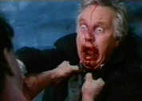

|
Re-Animator/B,B+ |
|
Elite/1985/86m |
 |
|
Making the dean's list. © |
Re-Animator is like having Christmas dinner in a
morgue when all the guests have a little too much glug to drink. This horror romp owes a
great dept to the free spirit of the old American International pictures with a nod to the
venerable Night of the Living Dead. Re-Animator is never about anything but having
fun and even the excessive gore is good for some blood curdling laughs. The story is not important,
the style is what counts. Stuart Gordon helms this haut horror frolic with a sense of joy in the
director's chair.
A colorful, blood-filled film, the DVD transfer at 1.85:1 is sharp and
fully saturated. Some undue grain compromises the transfer slightly, but overall this is a
excellent DVD. The Dolby Digital mono audio is very detailed. The special joy of Elite's special
edition are the audio commentary tracks. One track features director Gordon's mostly straight
forward discussion of the making of the film. Led by director Brian Yuzna, the second track
includes a most enthusiastic group of Re-Animator principals, including stars Jeffrey Combs,
Bruce Abbott, Barbara Crampton and Robert Sampson. For those familiar with Night of the Living
Dead's commentary, this has the same reunion/party whimsical tone to it and compliments the spirit
of the film to the tee. There are many other features such as deleted scenes that makes this
full-blown DVD special edition an excellent value.

Selections from the feature archive include articles on Akira Kurosawa,
Frank Darabont, Blonde Bimbos, Hollywood
Street Gangs, or Vietnam:
The Hollywood Pariah, and many more...
Robert
A. Harris
He's part of the dynamic duo that restored Lawrence of Arabia, Spartacus, My Fair Lady and Vertigo. Harris rides a white horse into the for the cause of preserving our film legacy. Click on the image to read more.

Movie Rage: Death in the Aisles
Everyone knows what it feels like to get angry at the
movies these days. Here's a humorous but not so delightful view of big screen misery.